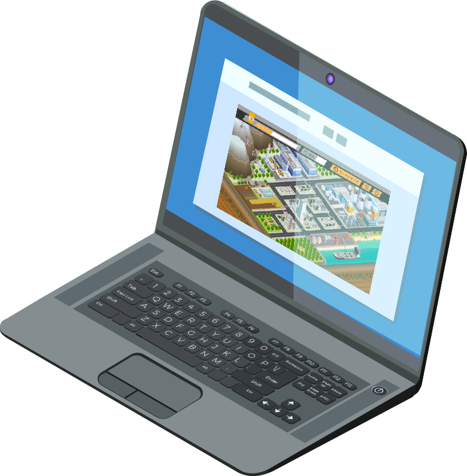
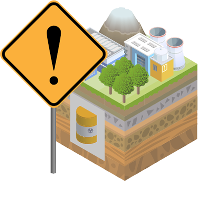
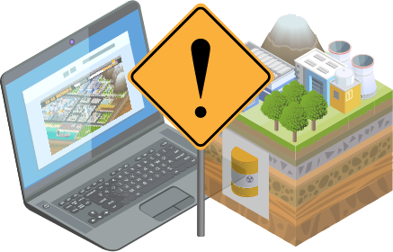

コンセプト
問題点
日本では、ガラス固化体はすでに25,000本相当発生しているにも関わらず、10年以上も最終処分地の選定に向けた目処が立っていないのが現状です。こうした厳しい現状となったのは、多くの原因や問題点があります。
その中でも、「この処分問題に対する認知の低さ、とくに、若い世代への教育が行き届いていない」ことを問題点としてあげました。
問題を解決する手段
そこで今回は、ゲーム性のある学習コンテンツを企画しました。
原子力発電所・再処理工場などがある架空の「小さい日本」をアイソメトリックなイラストで表現し、廃棄物の処分方法や処分場の候補地を探しだす、というものです。
中学校以上の学校での、学習教材としての使用を想定しました。

ねらい
このゲームは絶対にクリアできない、すなわち「詰む」ようになっています。
「ゲームが詰んでいる」ことと、核のゴミ問題の「詰んでいる現状」を、プレイヤー自身が重ね合わせることで、この問題を自分ごととして考えさせることがねらいです。

